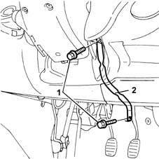

4110A32 steering shaft mounting bracket - r r
- Path
- Procedures > 41 STEERING > 4110 STEERING CONTROL AND LINKAGE > 4110A steering control > 4110A32 steering shaft mounting bracket - r r
- Kind
- repair procedure (removal / refitting; the operation number is the code)
- Applies to
- all engines; all production periods
- Interactive page
- https://sloeber94.github.io/elrnDB-fMltpl/en/#/2891677
Applies to: all engines; all production periods; only with equipment: Right hand drive
 Removing
Removing
 Refitting
Refitting1. Svitare le viti di fissaggio.
2. Rimuovere la staffa di reazione.

Applies to: all engines; all production periods; only with equipment: Right hand drive
Refitting
RemovingPosizionare la staffa di reazione e fissarla avvitandone a coppia le viti di fissaggio.
 | Fastening | Component | Ø | Value (daNm) |
|---|---|---|---|---|
- | Bolt | STEERING SHAFT MOUNT BRACKET | M8 | 1.5 |